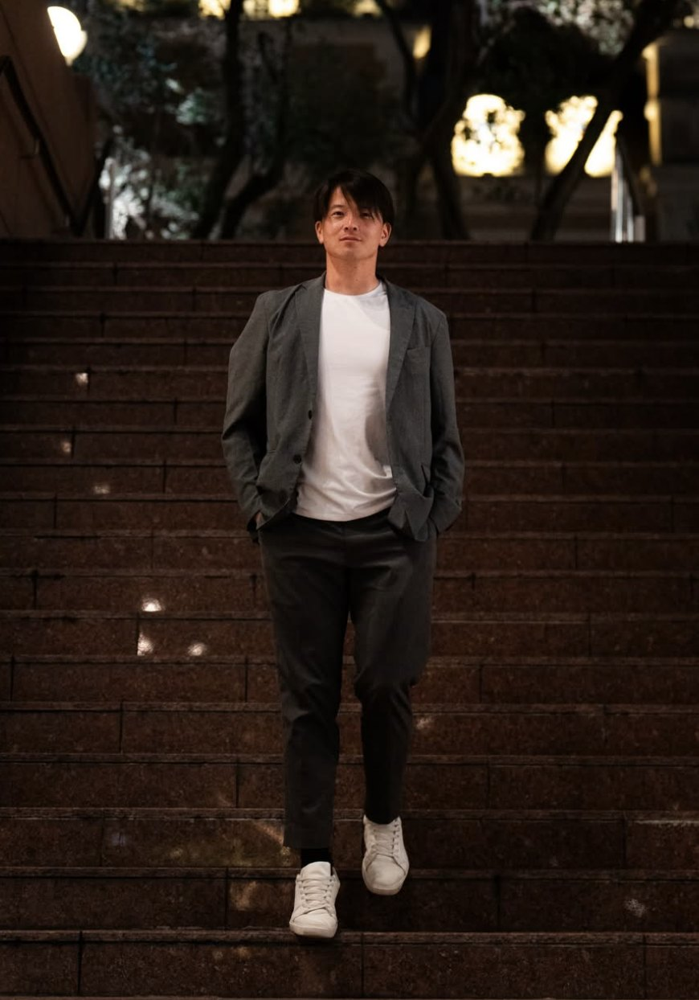
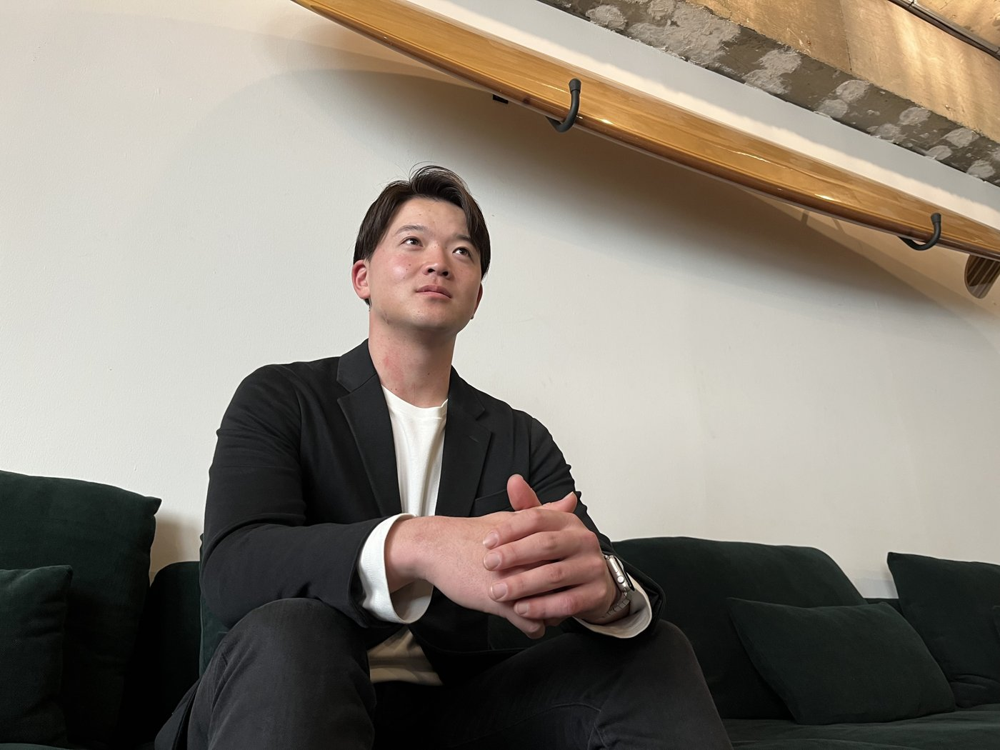

ATHLETE × RESEARCHER × ENTREPRENEUR
現役のうちに、
自分の価値を
設計する。
現役ラグビー選手として競技を続けながら、大学院で運動栄養学を研究し、複数の会社を経営しています。競技・研究・事業の三つの現場から、スポーツ選手の「市場価値」とキャリア設計を考え、発信しています。
- 完全無料
- 所要3分
- スマホで完結
- 売り込みなし

SINCE AGE 5
5歳でラグビーと出会う
HIGH SCHOOL
花園ベスト4
NATIONAL TEAM
U20日本代表
RESEARCH
運動栄養学・骨密度研究
ATHLETE CAREER DIAGNOSIS
競技の経験が、
最強の武器になる。
アスリートの市場価値を可視化する無料診断。所要3分、スマホで完結。あなたのキャリアタイプと、向いている仕事がわかります。
STEP 0
いまのあなたに近いのは？
競技データを分析中…

PROFILE
浅見 亮太郎
Ryotaro Asami
神戸出身。5歳でラグビーと出会い、流通経済大学付属柏高校で花園ベスト4。筑波大学では1年から試合に出場し、U20日本代表にも選ばれました。現在もリーグワンの現役選手としてプレーを続けています。
筑波大学大学院では運動栄養学を専攻し、ラグビー選手の骨密度と身体負荷を研究。合同会社A.R.C.の代表をはじめ、複数の会社の経営・オーナーを務めています。大学・高校の部活動の指導や、自治体・競技団体と連携した取り組みにも携わっています。
「才能で負けた分を、
時間と執着で取り返す。」― 自分の原点にある言葉
PHILOSOPHY
三兎を追う。
どれも、本気で。
「二兎を追う者は一兎をも得ず」と言われます。それでも自分は、競技・研究・事業の三つを同時に追うことを選びました。三つの現場を行き来するからこそ見える景色があり、それがスポーツ選手のキャリアを考えるうえでの強みになると信じています。
01 ATHLETE
現役ラグビー選手
勝ち負けの現場に身を置き続けること。言葉に重みを持たせる、一番の根拠です。
02 RESEARCHER
運動栄養学の研究者
感覚を、根拠のある言葉に変える。科学と現場をつなぐ架け橋をつくります。
03 ENTREPRENEUR
複数社の経営・オーナー
スポーツで培った力が、社会でどう通用するか。自分自身で確かめ続けています。
BUSINESS ― A.R.C.
構造が、成果を生む。
スポーツの「勝つための仕組み」を社会に広げ、強い組織を当たり前にする。合同会社A.R.C.は、目標設定・実行・改善・戦略を回すスポーツの考え方＝「SPORTS OS」で、人と組織が成果を出せる構造をつくります。
Sports Branding
スポーツブランディング
スポンサー営業、営業組織づくり、営業代行。企業版ふるさと納税を活かした選手のスポンサー支援も。
Sports Talent
アスリートのキャリア支援
人材育成、キャリア支援、企業とのマッチング。現役のうちから、競技後まで続くキャリアを設計します。
Sports Real Estate
スポーツ×不動産
チーム寮・選手の住まい、合宿や施設の確保まで、スポーツに特化した不動産サポート。
SNS
SNS運用
SNS戦略、ファンコミュニティづくり、スポーツブランディング。
Events
イベント・スポーツ教室
イベントや大会の企画、子ども向けスポーツ教室、地域・自治体と進めるスポーツの取り組み。
Coaching
コーチング・チームビルディング
パフォーマンス向上、メンタルコーチング、チームビルディング研修。
グループで手がける事業：お酒・コーヒー・盆栽の輸出入／モリンガを起点にした農業／ハウスクリーニング ほか。分野はさまざまでも、「スポーツで培った力を、社会のいろんな場所で活かす」という軸は一つです。
合同会社A.R.C. 公式サイトを見る →
ACHIEVEMENTS
現場で、積み上げてきたこと。
FOR TEAMS ― ATHLETE BRIDGE
選手の「未来」が、
そのままチームの「力」に。
大学部活動が抱える「就活の超早期化」と「慢性的な資金不足」。ATHLETE BRIDGEは、この二つをひとつの仕組みで越えていきます。選手にはスマホで完結するキャリアの伴走を。そして選手が内定を得るたび、その成果をプロテインや備品など“現物”でチームへ還元します。
選手もチームも費用は0円。学校の稟議も不要です。
GROWTH CYCLE
01 学生のキャリアを支援
02 優良企業へ内定
03 成果をチームへ還元
NOTE
毎日、言葉にしています。
FAQ
よくあるご質問
キャリア診断は本当に無料ですか？
はい、完全無料です。診断後に費用を請求したり、しつこい営業をしたりすることはありません。
入力した連絡先は何に使われますか？
診断結果をもとにしたご連絡と、サービス改善のためにのみ使います。第三者に提供することはありません。ご連絡が不要な場合は、その旨お知らせください。
現役の学生でも、引退した選手でも使えますか？
使えます。最初に「体育学生・現役学生」か「セカンドキャリア」を選ぶと、それぞれに合った質問に切り替わります。
診断のあと、どう相談すればいいですか？
結果画面の「結果をLINEで送って相談する」を押すと、回答内容が公式LINEに届きます。浅見本人が内容を見て、次の一歩をお返事します。
チームや部活単位での相談もできますか？
できます。ATHLETE BRIDGEでは、選手のキャリア支援とチームへの物資還元をセットで行っています。監督・コーチの方は「監督・コーチの方はこちら」からご連絡ください。
講演や取材の依頼はどこからできますか？
公式LINEで「依頼」と送るか、メール（a.r.c.1108w@gmail.com）でご連絡ください。
LINE OFFICIAL
浅見亮太郎のスポーツ戦略室
noteの最新記事を毎日お届けしています。感想やご相談も、トークからそのまま送ってください。すべて自分で読んでいます。
LINEで友だち追加する